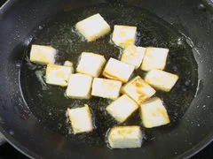

Shahi Paneer

About
पनीर की सभी प्रकार की सब्जियां, ज्यादातर लोग पसन्द करते हैं लेकिन शाही पनीर बहुत ही स्वादिष्ट सब्जी हैं, हर पार्टी की शान है, शाही पनीर सब्जी को आप अपने मेहमानों के लिये या अपने किसी स्पेशल दिन पर बनाइये. शाही पनीर सब्जी बनाने में बिलकुल आसान है.
शाही पनीर को पनीर के टुकड़े तल कर या बिना तले ही डाल कर दोंनो तरीके से बनाया जाता है. हम पनीर के टुकड़े तल कर शाही पनीर बनायेंगे. तो आइये हम शाही पनीर (Shahi Paneer Recipe) बना
ना शुरू करते हैं.
Ingredients Required
- Paneer
- Garlic
- tomato
- onion
- Indian spices
- Milk Cream
- Salt
- Water
- Oil
- Cashew
Steps To Prepare
- Heat oil in a pan and fry paneer cubes in it until golden brown.

- Remove the paneer cubes and put cumin, when it splutters, add bay leaf.
- When it starts to crackle add ginger, garlic and onion paste & Cashew Paste. Cook until it gets pinkish-brown in color.
- Add salt, garam masala, coriander powder along with red pepper. Stir till well mixed.
- Now, add tomato puree and stir fry over medium heat.
- Now, add paneer cubes to the mix and turn around a few times to completely mix it with the palak gravy.
- Pour some cream over, mix well and serve hot.